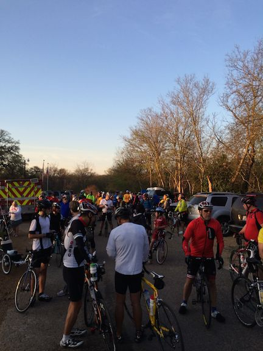
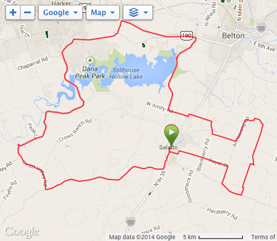
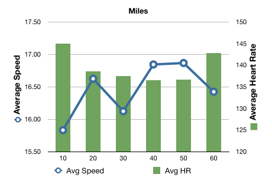
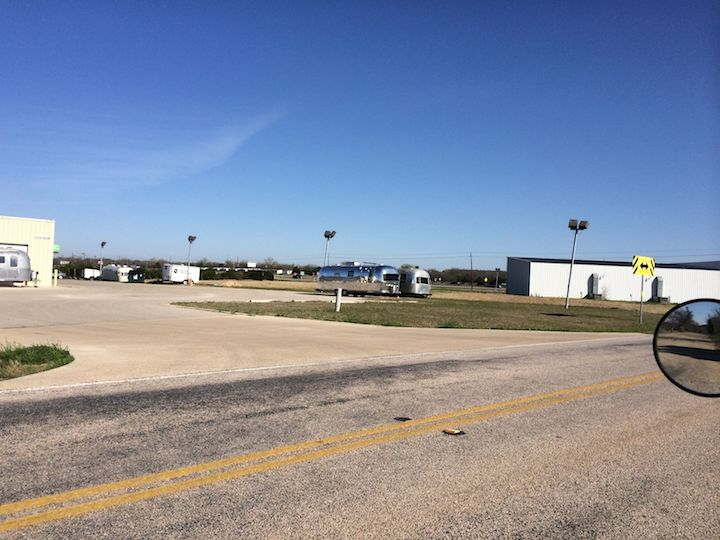
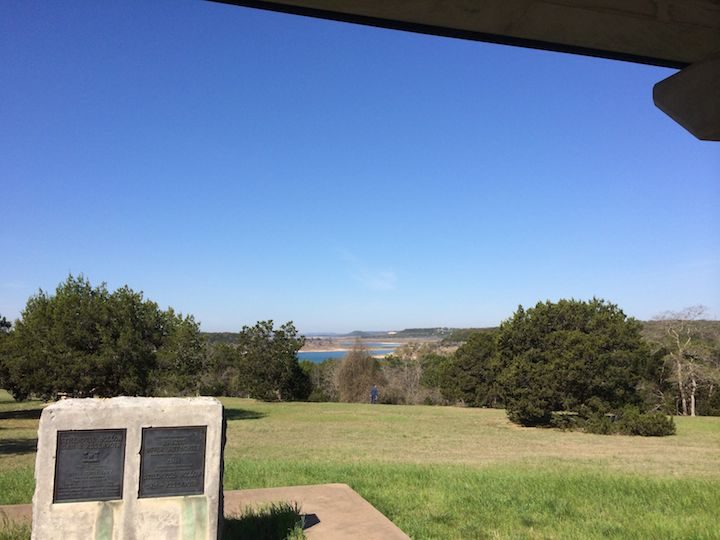
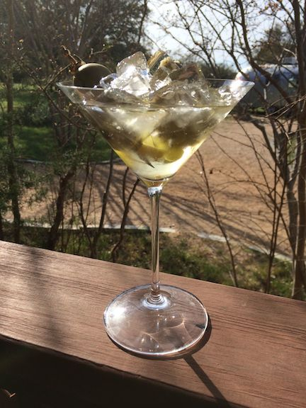

F-40 Salado Smoken Spokes 100k
28 Mar 2014
Salado Smoken’ Spokes - Started out targeting the 100 mile ride ended up with an easy, enjoyable, 100k instead.
With about 200 riders the Salado ride was competing with the LBJ 100 and the Cow Patty Classic.
|  |  |
Today’s ride was beautiful if not a little windy - 15 mph gusting to 21 mph. Usually the high winds are a challenge in the F-40 but yesterday I’d make some modifications which really negated almost all the wind’s effects. I’ll detail the changes in another blog entry - I used to be challenged when riding in gusty winds over 15 mph but now this does not seem to be a problem.
Just a couple of other recumbents at the ride:
Don Bynum on his Catrike 700 (http://donbynum.wordpress.com). Brian Buckmaster on his ICE Vortex and Tom Roberts on his Cruzbike Vendetta.
I got to talk with Tom a little before the ride. Turns out he crewed for Maria Parker during her 2013 RAAM win. Tom is from Victoria TX, a very nice guy, and extremely fast on his Vendetta. I rode with mainly the 2nd fastest group on the ride and, for the three rest stops I stopped at, each time as I was leaving the rest stop Tom was pulling in on his Vendetta. There is a nice write up on Maria’s RAAM ride here: http://www.ultraracenews.com/2013/09/04/raam-2013-maria-parkers-amazing-comeback-victory/
The Plan
My pre-ride plan was shot to pieces almost immediately. I wanted to start towards the middle of the riders, keep my heart rate under 120 and then gradually try to push it a little bit to see if I could make it the 100 miles. Well, once again I started at the front of the pack because the initial ride out of the park had a good uphill left hand turn that I did not want to try and navigate with lots of other inexperienced riders. Once out of the park the initial mile out of town is climbing out of the river valley and my heart rate stayed around 150 for the first 30 minutes.
I finally managed to calm down my enthusiasm down some. However it was a constant struggle to try and just take it easy.
The increased heart rate at the end of the ride depicted below was because of some unusual road condition.
Twice during the ride the following happened: would be peddling along, when for no apparent reason it would be extremely hard to peddle and my heart rate would shoot straight up. The first time I was on a very slight up hill cruising alone normally and then gradually, but pretty quickly, it got extremely hard to peddle. I finally unclipped and got off the bike to check what could possibly be wrong but found nothing. The wheels spun freely, the peddles spun easily, none of the brakes were dragging. When I got back on the bike again everything was normal again???
The second time it happened I was on a part of the road that was under construction. I figured that some dirt (calliechee sp?) was getting onto the tires and frame and plugging things up. However, once through the construction I got off the bike to clean it up and again nothing was wrong. The bike was perfectly clean, everything moved free and easy.
When talking to Brian Buckmaster after the ride he indicated that he has the same issue with his ICE Vortex at the construction site. If this happens again on another ride I’m going to have to find out what is going on.

The Excitement
Several times during the first couple of hours I mixed it up with the fast riders. Going up the hills they’d pass me and leave me behind. Going downhill I’d catch them and pass them doing a little over 35 mph. Once I passed them doing 40 mph - when a big pace line of 15 to 20 riders is cruising along at 28 mph and you whip out into the passing lane at 40 mph you can get by them pretty quick. The first time I did passed them seem to startle the riders at the front of the pace line when I yelled ’On your left’ as I flew by.
Once on a level part of the road I’m cruising with the group gabbing at 18 mph and one of the lead riders asks ’You have any problems with that thing on a windy day?’.
(Now remember, on this ride the wind is already 15 mph gusting to 21).
My answer - ’You mean like today?’.
They laugh and said - ’We noticed that when you got to the bottom of the hill the cross wind shoved you to the left a couple of feet.’.
Shortly thereafter we turned directly into the 15 mph headwind and I was easily able to pull away. (F-40 says ’Headwind? What headwind?’).
There was a 2 mile stretch around mile 40 where it was a quartering tail wind. The F-40 acted like a sail boat with a keel and I was able to cost slightly uphill for about 2 miles with the fast group doing about 18 to 20 mph. They were peddling pretty good - I was coasting.
That looks Effortless
Several times previously I’ve had other riders tell me how the F-40 just glides by them silently and effortlessly. They always ask if I have an electric motor in the thing.
I know they cannot see any movement because my feet are hidden. But really I’m peddling like mad inside the thing.
Well today I had someone make a comment that helped me understand their thinking.
Riding slightly uphill I’m slowing passing a lady and she makes the usual comment ’That looks effortless!’. I reply that I’m actually peddling quite hard. She says ’Well your head is not moving so it looks like you are not doing anything.’ I guess that my peddle stroke is smoother than I thought it was.
Sisters On the Fly
About 30 miles into the ride, turning onto TX190 just outside of Killen I came across a place of business that must do something with Airstreams. Stopped to take a picture for my wife Robyn who belongs to a vintage airstream womens group (http://www.sistersonthefly.com).

36 miles into the ride the rest stop was at Stillhouse Hollow Lake. One of my favorite places to ride to from Georgetown. The view is beautiful on a sunny day.

Hydation and Nutrition
I did ok with fluids and food. Started to cramp some around mile 45 but took some extra endurolytes and easy spun out of them. I probably could have finished the 100 miles (instead of the the 100k) but I decided to finish the day really good and just enjoying myself tremendously.
By the numbers:
Last, but not least, the post ride recovery drink sitting on the back porch after a wonderful day:
